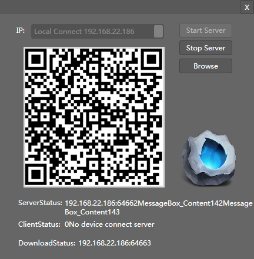

Connect Device
Intro

Add support to preview in the mobile equipment （Ver1.1 or later）。You can see the scene view in real environment.
Function
IP
Selected the IP address as the server‘s IP address.
notice：If your computer has more than one network card,You must choose which can connect mobile equipment network card.
Start Sever
Open the service process to links for mobile devices。And initialize the qr code image.
Stop Server
Close the process，After stop Server,the mobile devices will not be able to get the data from the scene editor.
Refresh
Refresh the server-side data packets.If you have modified in the scene editor,You need connect server again after refresh data.
Browse
Open the folder where the mobile device installation package is.Android devices can be installed directly, IOS devices need jailbreak.